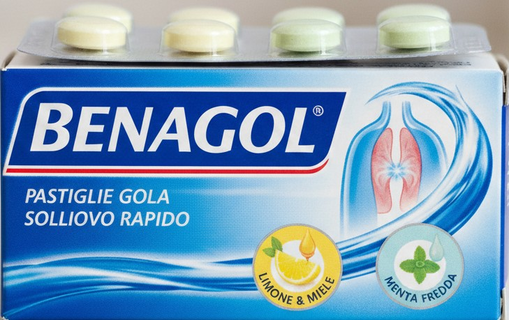

Benagol

Informazioni Generali
Benagol è un farmaco da banco usato soprattutto per mal di gola e infiammazioni della bocca. Contiene generalmente benzidamina cloridrato, un antinfiammatorio e analgesico locale che riduce dolore, bruciore e gonfiore. È disponibile in diverse forme, come pastiglie, spray e collutorio, per un'azione mirata su gola e cavo orale.
Dettagli del Farmaco
- Principio attivo: Benzidamina cloridrato
- Formato: Pastiglie, Spray orale, Collutorio
- Dosaggio: Variabile in base alla forma
- Obbligo di ricetta: No (OTC)
Farmacie dove si può reperire il farmaco

Farmacia Centrale
Via Francesco Petrarca, 14r, 16121 Genova GE
08:30 - 20:00Servizi:
- Misurazione Pressione
- Screening Prevenzione
- Test Rapidi Covid
Farmacia Comunale
Via Roma, 45, 16121 Genova GE
09:00 - 19:30Servizi:
- Misurazione Pressione
- Screening Prevenzione
- Test Rapidi Covid
Farmacia San Marco
Piazza San Marco, 8, 16121 Genova GE
08:00 - 20:30Servizi:
- Misurazione Pressione
- Screening Prevenzione
- Test Rapidi Covid
Farmacia Europa
Via Garibaldi, 123, 16121 Genova GE
08:30 - 19:00Servizi:
- Misurazione Pressione
- Screening Prevenzione
- Test Rapidi Covid